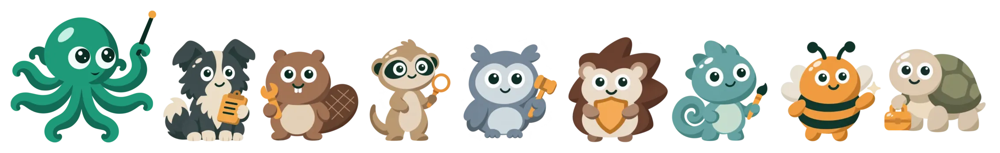

Sketches for the owner to choose from (#3563). Each animal is drawn in the cast's flat style, looks at the viewer and carries the writer's tools, a notebook and a pen. Each is shown on the light and the dark background. The chosen animal joins the team strip after the Maintainer (the tortoise); the other two are dropped. sketches.png shows the same three as one picture.
The cast today, for comparison (serve this page from docs/ so the picture loads):

A: OtterHolds its notebook close, as otters keep a favorite stone: the writer who keeps the pages tidy. Brown with a cream face, distinct from the beaver by its long tail and whiskers.
B: HeronIts beak is the pen nib, and it stands still and reads closely before it writes. Blue gray, the only bird with long legs, so it stays apart from the owl and the bee.
C: Red pandaWarm rust and cream with a ringed tail: a new color in the strip, which has no red animal yet. The face marks read well at the strip's small size.